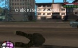

Fragman
-
02:10
Deliha Fragman
Türkiye’de ilk kez bir kadın komedi oyuncusu kendi yazdığı karakteri beyazperdeye taşıdı. Deliha, biraz deli, çok matrak ve sahiden temiz kalpli bir genç kadının aşkı bulmaya çalışırken başından geçen komik olayları anlatıyor. Gup
100.633 izlenme 1 hafta önce -
01:52
Seni Seviyorum Adamım - Fragman
Başrollerini Gizem Karaca ve Barış Kılıç'ın paylaştığı, yönetmenliğini Biray Dalkıran'ın yaptığı, “Seni Seviyorum Adamım�, 21 Kasım’da seyirciyle buluşuyor. Yönetmen Biray Dalkıran Oyuncular: Gizem Karaca, Barış Kılıç
160.803 izlenme 2 hafta önce -
02:31
Dabbe 5 Zehr-i Cin (Fragman)
DABBE 5 : ZEHR-İ CİN FRAGMAN 12 EYLÜL'DE SİNEMALARDA HASAN KARACADA�'IN YENİ DEH�ET ÖYKÜSÜ! KARANLIK BİR SİNEMA SALONUNDA ONLARLA YÜZLE�MEYE CESARETİN VAR MI?...FRAGMAN ÖZET:Dabbe 'nin 5. serisinde;dünyayı şoka sokacak gerçek bir ol
482.887 izlenme 2 ay önce -
01:48
İncir Reçeli 2 Fragmanı
İlk film İncir Reçeli’nde sevdiği kadını kaybeden Metin (Halil Sezai Paracıkoğlu) İncir Reçeli 2’de derin bir yalnızlığın içindedir. Bir barda şarkılar söyleyerek ve yitirdiklerinin yasını tutarak yaşamını sürdürürken bekleme
303.648 izlenme 2 hafta önce -
02:43
Sex Tape (Fragman) Cameron Diaz, Jason Segel
Seks Kasedi – Sex Tape (2014) – Fragmanı Hikaye, bir geceliğine çocuklarından uzaklaşıp yalnız kalan bir çiftin ilişkilerine heyecan getirmek için bir seks kaseti çekmeye karar vermesiyle başlar. Gece her şey yolunda gitse de ertesi sabah
1.286.758 izlenme 7 ay önce -
02:21

Recep Ä°vedik Fragman
�ahan'ın tiplemesi Recep İvedik'ten muhteşem bir sinema filmi. Fragmanda bile kopmak garantili. Recep İvedik sokakta bulduğu bir cüzdanın Antalyalı çok önemli bir iş adamına ait olduğunu öğrenince güneye doğru yola koyulur. Yol boyunca
9.662.722 izlenme 7 yıl önce -
02:35

Dracula Untold Fragman
Dracula Untolddracula, Gerçek Bir Efsane Olan Vlad The Impaler'ın Hikayesini Odaklanarak Drakula'nın Ve Vampir Mitolojisinin Köklerine İniyor. Filmin Yönetmenliğini İlk Yönetmenlik Tecrübesine İmza Atan Gary Shore Gerçekleştirirken, Başrolle
440.993 izlenme 4 ay önce -
01:37
Kış Uykusu (2014) Fragman
Nuri Bilge Ceylan'ın yönettiği, Haluk Bilginer, Demet Akbağ, Melisa Sözen ve Nejat İşler'in oynadığı filmin fragmanı
560.977 izlenme 6 ay önce -
02:05
Azazil: Düğüm (Fragman)
Hem annesini hem babasını kaybeden Sinem'i yalnız bırakmamak için teyzesi ve eniştesi ailesinden kalan evde onunla beraber yaşamaya başlar. Üniversitede tanıştığı sevgilisi Akın ile de güzel bir beraberliği vardır. Fakat bir gün ikisi a
354.065 izlenme 4 ay önce -
00:37
Seni Seviyorum Adamım - Teaser
Başrollerini Gizem Karaca ve Barış Kılıç'ın paylaştığı, yönetmenliğini Biray Dalkıran'ın yaptığı, “Seni Seviyorum Adamım�, 21 Kasım’da seyirciyle buluşuyor. Yönetmen Biray Dalkıran Oyuncular: Gizem Karaca, Barış Kılıç, E
166.154 izlenme 2 hafta önce -
03:17

Recep Ä°vedik 4 - Fragman
Recep İvedik 4 Fragman - 21 �ubat 2014 Sinemalarda!
902.634 izlenme 9 ay önce -
02:24

Transformers Kayıp Çağ Türkçe Dublaj Fragman
Serinin dördüncü filmi 27 Haziran 2014 yılında seyirciyle bulaÅŸacak. Filmin baÅŸrollerinde ise Mark Wahlberg, Nicola Peltz ve Stanley Tucci gibi isimler yer alacak. Filmin bir bölümü ise Çin'de geçicek. Üç yıl önce Chicago'da yaÅŸanan savaÅ
911.762 izlenme 8 ay önce -
01:50
Karınca Kapanı - 2. Fragman
Fırat Tanış'ın yönettiği ve başrolde olduğu Karınca Kapanı filminin 2. fragmanı... Oyuncular: Fırat Tanış, Neslihan Yeldan, Cüneyt Uzunlar, İdil Vural, Eşref Kolçak, Mesut Yar, Emre Kınay, Bahtiyar Engin. 9 Mayıs'ta Sinemalarda!
472.026 izlenme 6 ay önce -
00:47

Kiraz Mevsimi 17. Bölüm 2. Fragmanı
Kiraz Mevsimi her Cumartesi FOX'ta! 17. Bolum'un Ozeti: Ayaz’a sinirlenen Oyku, Derin’le calismaya baslar. Ayaz da Oyku de kendini hakli gormektedir. Ikisi de birbiriyle konusmaz. Mete’yi, Gizem’e kaptirdigini dusunen Seyma, Gizem’le ilgili co
11.535 izlenme 24 saat önce -
02:43
Recep Ä°vedik 3 Fragman
Babaannesinin ölümünden sonra Recep İvedik kendisini kötü hissetmekte ve son derece komik depresyon belirtileri göstermektedir. Her gece gördüğü bir kabus da sinirlerini iyice bozmuştur. Bu kabustan kurtulmaya çalışan Recep, mahallenin ev k
3.918.091 izlenme 5 yıl önce -
03:09
Recep Ä°vedik 2. Fragman
recep ivedik karakterinin 2.filmi vizyona girmeye hazır.bu seferki daha komik işte fragman!
4.098.234 izlenme 6 yıl önce -
01:16
Fragman
47 izlenme 3 yıl önce -
00:42

Fragman
42 izlenme 3 yıl önce -
00:07
Fragman
Fragman
11 izlenme 9 ay önce -
01:02

Fragman
Fragman
5 izlenme 4 ay önce -
00:31

Fragman
Yakında!
18 izlenme 3 yıl önce -
01:41
Fragman
Fragman
4 izlenme 5 ay önce -
01:55
Fragman
Fragman
2 izlenme 4 ay önce -
02:17
The Canyon Fragman
Genc bir cift amerikada buyuk kanyon gezisine cikar ancak orda karsilarina beklemedikleri garip bir yabanci cikar once bu tanimadiklari yabanci onlara rehberlik eder ama daha sonra bu karsilasma bir hayatta kalma mucadelesine donusur...
727.751 izlenme 2 yıl önce -
02:20
Recep Ä°vedik 5 Fragman
------Daha Fazlası İçin Lütfen Kanalımıza Abone Olunuz------- Recep İvedik yeni maceralarıyla 21 �ubat'ta sizlerle. recep ivedik 4 Fenomen haline gelen ve iz...
282.759 izlenme 7 ay önce -
02:14
�ipşak Anadolu Fragman
�ipşak Anadolu Fragman
65.998 izlenme 2 ay önce -
01:37
Cavemen Fragman
Cavemen Fragman
145.136 izlenme 10 ay önce -
01:06
Macera PeÅŸinde 1.Sezon -Fragman
SEDAT(KITESURF) VE BORA(WINDSURF) KENDILERINI KITESURF VE WINDSURF'E ADAMI� IKI KAHRAMANIMIZDIR. 2013 SURF SEZONUNUN KAPANMASINDAN BUGÜNE 5 AY GEÇMI�TIR VE ARTIK BU BEKLEYIS ONLAR IÇIN DAYANILMAZ OLMAYA BA�LAMI�TIR. BU HEYECANLA YOLCULUK BA�LAR.
210.041 izlenme 5 ay önce -
02:02
Düğün Dernek Fragman
Düğün Dernek filminin 6 Aralık'ta vizyona girecek olan resmi fragmanı karşınızda... Dört yakın arkadaşın kafa kafaya verip imece usülü bir düğün yapmaya çalışması ve bu süreçte beklenmedik durumlarla karşılaşmasını konu alan B
299.701 izlenme 12 ay önce -
01:12
Fragman
Fragman
10 izlenme 5 ay önce